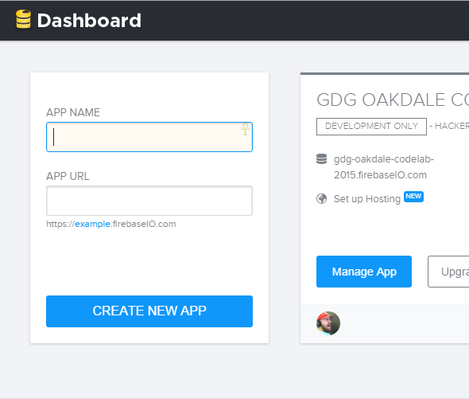
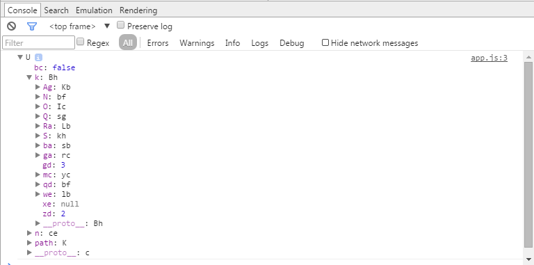
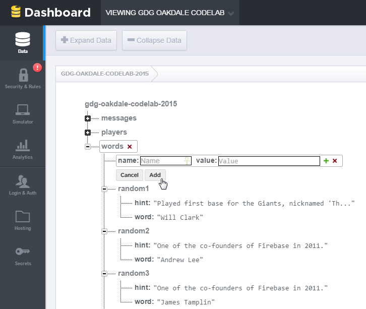

Getting started using Firebase Web Platform as seen at a April 2015 meetup at GDG Oakdale.
This codelab is designed to help you learn about using Firebase. During this lab, we're going to build a varition of the classic game Hangman.
Documentation! You can never have enough of it and during this codelab you may find yourself looking for one more method to go that extra mile. Docs you may find useful include:
Now, let's start by creating a directory for our application:
➜ ~ mkdir my-firebase-game
➜ ~ cd my-firebase-game
Next, we need to create a few basic files:
➜ ~ touch index.html
➜ ~ touch css/main.css
➜ ~ touch js/app.js
Now that we have a few files, let's add some basic markup to our html:
<html lang="en">
<head>
<meta charset="utf-8">
<meta name="viewport" content="width=device-width, initial-scale=1">
<title>Fire Hangman</title>
<link rel="stylesheet" href="css/main.css">
</head>
<body>
<div class="container">
<h1 id="header">Hangman on Fire</h1>
</div>
<script src='https://cdn.firebase.com/js/client/2.2.1/firebase.js'></script>
<script src="https://ajax.googleapis.com/ajax/libs/jquery/2.1.3/jquery.min.js"></script>t
<script src="js/app.js"></script>
</body>
</html><You'll note we added in the CDN script link to the Firebase library as well as the most recent jQuery.
Tip: we can also use bower install firebase as well.
Now, let's create a new project within our Firebase account:
Now that we have an endpoint, let's wire up some of our JavaScript in app.js:
var baseRef = new Firebase("{ Your Firebase URL }");
console.dir(baseRef);
Let's make sure things are working by running our code:
➜ ~ python -m SimpleHTTPServer 4001
And browse to http://localhost:4001/, open Chrome Dev Tools and you should see something like:
We can see that we're talking to Firebase and we're on the right track. Now let's start building.
Stuck? Check the step-01 folder for a solution.
Let's start with the markup:
<div id="nameRow">
<label for="name">Name:</label><input type="text" id="name"></input>
</div>
<div id="chatWindow">
<ul id="messageList"></ul>
</div>
<div>
<input type="text" id="message" placeholder="Something witty here..."></input>
</div>You'll probably want to add some style via main.css. Don't have the time? Just look in the step-02 folder for some sample CSS to get you started.
Now we grab a reference to the messages child from Firebase.
var messagesRef = baseRef.child("messages");We'll also need references to various elements.
var chatWindow = $("#chatWindow");
var messageField = $("#message");
var messageList = $("#messageList");
var nameField = $("#name");We now need to listen for the user's input. When the user hits the enter key we'll take the user's name and their message and push it to Firebase.
messageField.on('keypress', function(e) {
if(e.keyCode === 13) {
var message = {
name: nameField.val(),
message: messageField.val()
};
messagesRef.push(message);
messageField.val('');
}
});Our messages are now being sync with Firebase.
To verify the messages are being sent, go directly to your Firebase url in your browser. This is the Firebase Dashboard where you can view / edit your existing data.
The chat window is pretty empty. How about we remedy that. Using our reference to messages we'll use the query child_added. This allows us to subscribe to whenever a child is added at the given endpoint. We also want to limit the number of children we get by using limitToLast. This fetches the last x number of records that were added. Within the method we're given access to the snapshot variable. This contains an important method val(). This is the object that was added. From there we can grab the pertinent data and add it to our chat window.
messagesRef.limitToLast(20).on('child_added', function (snapshot) {
//GET DATA
var data = snapshot.val();
var name = data.name || "anonymous";
var message = data.message;
//CREATE ELEMENTS MESSAGE & SANITIZE TEXT
var messageElement = $("<li>");
var nameElement = $("<label></label>");
nameElement.text(name);
messageElement.text(message).prepend(nameElement);
//ADD MESSAGE
messageList.append(messageElement)
//SCROLL TO BOTTOM OF MESSAGE LIST
chatWindow[0].scrollTop = chatWindow[0].scrollHeight;
});You now have a working chat. Try entering a few messages. You should see the messages appear in the chat window. Also, if you reload the page you will notice that your chat window contains the same messages as before.
Stuck? Check the step-02 folder for a solution.
How does one build our Hangman on Fire application? We need to lay some ground rules:
Tip: We understand that you could do a lot of fancy things with this, but let's keep it simple to start!
We're going to build a class called fireHangman in JavaScript. For this codelab, we're going to use the Module pattern to make our life easier. If you don't know the pattern, don't worry, you can adapt the code as you see fit to your style.
Tip: See Addy Osmani's explanation of the module pattern in his awesome book: Learning JavaScript Design Patterns
We can hash out the basic methods that we'll need:
What this looks like mocked out in code:
var fireHangman = (function () {
// private var
var firebaseRef;
// private methods here
// return our public methods
return {
init: function(context) {
},
start: function() {
},
guess: function(letter) {
}
})();
This will help us get started. Now let's start building our Hangman on Fire game logic.
Let's add additional variables to our fireHangman class.
var firebaseRef,
messagesRef,
gameChild,
gameRef,
playersRef,
playerList,
playerId,
userId;We need to initialize the variables we declared above.
init: function(context) {
// Our endpoint
firebaseRef = context;
// Setup some references
messagesRef = firebaseRef.child("messages");
playersRef = firebaseRef.child("players");
gameChild = firebaseRef.child("game");
userId = localStorage.getItem('userId');
// Define out players
playersRef.transaction(function(playerList) {
if (playerList === null) {
playerList = [];
}
for (var i = 0; i < playerList.length; i++) {
if (playerList[i] === userId) {
playerId = i;
return;
}
}
playerList[i] = userId;
playerId = i;
return playerList;
}, function (error, committed) {
// Nothing Yet...who knows...maybe we'll use this later...maybe...
});
}A new piece added above is using transaction(). This allows us to ensure that our current player is either already in the player list, or we add that play to the playerList.
Tip: The transaction code is based on the player assignment example: firebase_player_assignment.js. For more information on Firebase transactions see Firebase.transaction().
One this you probably noticed is that, where exactly is userId coming from? How is it in localStorage and what is it's purpose? We need some means to uniquely identify each player beyond the name they decide to enter. In this case, we'll add some code to our $(document).ready():
var userId;
if (localStorage.getItem('userId') === null) {
userId = 'user' + parseInt(Math.random() * 1000, 10) + Date.now();
localStorage.setItem('userId', userId);
} else {
userId = localStorage.getItem('userId');
}
Let's also make sure we add the call to our init() function in our $(document).ready():
//
// Initialize the game state
//
fireHangman.init(baseRef);
Lastly, we need to give our game a way to communicate with our players. Let's create a private method in our class called botSays(). Notice we're using the same process to send message to our chat window via Firebase:
botSays = function(message) {
var payload = {
name: '** FIREBOT **',
message: message
};
messagesRef.push(payload);
};Stuck? Check the step-03 folder for a solution.
Now that we have the basics of our player setup, we can now begin building the methods to start our game. First things first: we need some words. For this codelab, we can simply add words as a child to our tree. We can use the following data structure as a sample:
{
"hint": "One of the co-founders of Firebase in 2011.",
"word": "Andrew Lee"
}
We could make a method to push this data, but we can use a cool feature of the Firebase dashboard and add/edit data on-the-fly:
Tip: Want to see your data in Chrome Dev Tools? Use Firebase's Chrome Extension, Vulcan
Now that we have some data, we can pull that data for use in our init():
wordsChild = firebaseRef.child("words");
wordsChild.on('value', function(snapshot) {
if(snapshot.val() === null) {
console.log('Error: No Words in Firebase!');
} else {
wordRecords = snapshot.val();
}
});
Now we need some means to actually select a random word and start out game, so let's add a public method that we can call when a user initiates our game:
start: function() {
// select a random word and update game state
}
As the comment above states, we need to select a random word. Since we've loaded our words into wordRecords, we handle this via:
var keys = Object.keys(wordRecords);
var randomNumber = Math.floor(Math.random() * keys.length);
selectedWord = wordRecords[keys[randomNumber]].word;
selectedHint = wordRecords[keys[randomNumber]].hint;
Tip: Remember, our wordRecords is an Object. This is why we have to grab the keys first!
This only gets us half way there; we need some means to tell everyone who's playing our game what's going on. For this, we need to tell Firebase about the state of our game. Let's create an object with the information about the start of our game:
var gameState = {
word: selectedWord,
message: selectedHint,
wordState: blanks,
usedLetters: '',
turn: 0,
left: 7
};
Looking at our object, we can see that we're not just setting the word and message, but also some basic information about our game:
With this object set, we can push to our game child and have the bot tell us a new game has started and that the first player is ready to guess:
gameRef = gameChild.push();
gameRef.set(gameState);
botSays("New game started! Word/Phrase <span class='blanks'>" + blanks + "</span>");
botSays("The current hint is:" + selectedHint);
playersRef.child(0).once('value', function(snapshot) {
botSays("It's your turn " + snapshot.val() + "! Guess with /guess {{letter}}");
});
To make life simplier, we can group all this into a private function called setRandomWord():
setRandomWord = function() {
var keys = Object.keys(wordRecords);
var randomNumber = Math.floor(Math.random() * keys.length);
selectedWord = wordRecords[keys[randomNumber]].word;
selectedHint = wordRecords[keys[randomNumber]].hint;
console.log(selectedWord, selectedHint);
// You'll need to implement setBlanksForWord()
var blanks = setBlanksForWord();
var gameState = {
word: selectedWord,
message: selectedHint,
wordState: blanks,
usedLetters: usedLetters,
turn: 0,
left: 7
};
gameRef = gameChild.push();
gameRef.set(gameState);
botSays("New game started! Word/Phrase <span class='blanks'>" + blanks + "</span>");
botSays("The current hint is:" + selectedHint);
playersRef.child(0).once('value', function(snapshot) {
botSays("It's your turn " + snapshot.val() + "! Guess with /guess {{letter}}");
});
};
We can now update our start():
start: function() {
if (gameRunning) {
botSays("Hey, pay attention. We've already started a game.");
botSays("The current hint is: " + gameRecords.message + "");
} else {
setRandomWord();
}
}
But how do we tell if the gameRunning is set? We'll need to update our init() to add a few hooks to listen for changes to our game state:
gameChild.on('child_added', function(snapshot) {
if(snapshot.val() === null) {
gameRunning = false;
console.log('Error: No Game Running in Firebase!');
} else {
gameRunning = true;
gameRef = firebaseRef.child("game").child(snapshot.key());
gameRecords = snapshot.val();
selectedWord = gameRecords.word;
selectedHint = gameRecords.message;
usedLetters = gameRecords.usedLetters;
}
});
gameChild.on('child_changed', function(snapshot) {
if(snapshot.val() === null) {
gameRunning = false;
console.log('Error: No Game Running in Firebase!');
} else {
gameRunning = true;
gameRecords = snapshot.val();
selectedWord = gameRecords.word;
selectedHint = gameRecords.message;
usedLetters = gameRecords.usedLetters;
}
});
Now when we push our gameState out on either start() or future updates, we can update our players on what's happening.
Finally, we need some means to start our game from the chat. Let's update our messageField.on() handler to do a check for the "/start" command:
messageField.on('keypress', function(e){
if(e.keyCode === 13) {
var message;
if (messageField.val() === '/start') {
// Let's start a game
fireHangman.start();
} else {
...
Stuck? Check the step-04 folder for a solution.
At this point, we have general chat, players, and the start of a game. But now we need to handle guesses and player turns so that we can actually finish a game! Let's start by adding a public method to our class called guess():
guess: function(letter) {
// guess and do some game things
}
Unlike our start method, guess takes an input from the user and checks to see if we have a hit. But even before we do that, we should probably check if it's our turn:
guess: function(letter) {
if (gameRecords.turn === playerId) {
// run our letter check
} else {
botSays("Whooaaa there " + userId + ", it's not your turn. Slow your roll.");
}
}
Why does this work? Because of the gameChild.on('child_changed', ...), we can expect that gameRecords is updated via the game state change in that handler and we can simply check against our playerId that was set during the init() playersRef.transaction().
Now that we know whether it's our turn our not, it's time to start guessing. Before we can even check our letter, first let's update a few variables we're going to need and then we can check our selected word:
// we'll need to update the wordState
var updateWord = updateBlanksForWord(letter);
// Subtract a turn, use only if guess misses
var turnsLeft = gameRecords.left - 1;
// Add letter guess to usedLetters
usedLetters = usedLetters + letter;
if (selectedWord.indexOf(letter) !== -1){
// we have a match!
} else {
// we have a miss!
}
Next, let's focus on the happy case where we're winning and have matched a letter. We know we need to update the game state and let people know who's turn it is (in this case, a match means the player keeps guessing until a miss occurs), but we also need to account for the case where we win:
botSays("We have a hit captain!");
if (gameRecords.word === updateWord) {
botSays("Winner winner firebase dinner! You did it " + userId + "! Answer:" + selectedWord);
} else {
botSays("Turns left: " + gameRecords.left);
botSays("Word state: <span class='blanks'>" + updateWord + "</span>");
}
gameRef.update({
usedLetters: usedLetters,
wordState: updateWord,
turn: playerId,
left: gameRecords.left
});
Not too complex: we check the gameRecords.word against the updated word and if they match, we know the player has won the game. If not, we can simply let people know that the word state has changed and can update our existing game state.
What happens if we miss a letter? We'll need to some additional work. One, we have to change the player turn. Two, we have to check if the game is over due to running out of guesses. Three, we have to inform the next player it's there turn.
botSays("We have missed, the meter grows towards game over.");
if (turnsLeft === 0) {
botSays("It's game over mannnnn! Answer was: " + selectedWord);
gameRef.update({
left: 0
});
} else {
botSays("Turns left: " + turnsLeft);
botSays("Word state: <span class='blanks'>" + gameRecords.wordState + "</span>");
// Increment the turn
playersRef.child(playerId+1).once('value', function(snapshot) {
var nextTurn = 0;
if (snapshot.val() !== null) {
nextTurn = playerId+1;
}
gameRef.update({
usedLetters: usedLetters,
wordState: updateWord,
turn: nextTurn,
left: turnsLeft
});
playersRef.child(nextTurn).once('value', function(snapshot) {
if (snapshot.val() !== null) {
botSays("It's your turn " + snapshot.val() + "! Guess with /guess {{letter}}");
}
});
});
}
Things to note in the above code:
turnsLeft === 0, we still push an update to the state of left because we'll need to inform other players the game has ended.playersRef so that we can increment the turn. If that snapshot.val() is null, we simply go back to the first player.We can make sure all clients are on the same page by reset the state when the game ends
by updating our gameChild.on('child_changed', ...) handler:
if (gameRecords.word === gameRecords.wordState || gameRecords.left === 0) {
gameRef.remove();
gameRunning = false;
}
Finally, let's update our messageField.on() handler to do a check for the "/guess {{letter}}" command:
messageField.on('keypress', function(e){
if(e.keyCode === 13) {
var message;
if (messageField.val() === '/start') {
// Let's start a game
fireHangman.start();
} else if (new RegExp('\/guess', 'i').test(messageField.val())) {
// Looks like we're guessing a letter
var letter = messageField.val().slice(-1);
fireHangman.guess(letter);
} else {
....
Stuck? Check the step-05 folder for a solution.
Congratulations! You have completed this codelab! Have some extra time? Things for consideration: